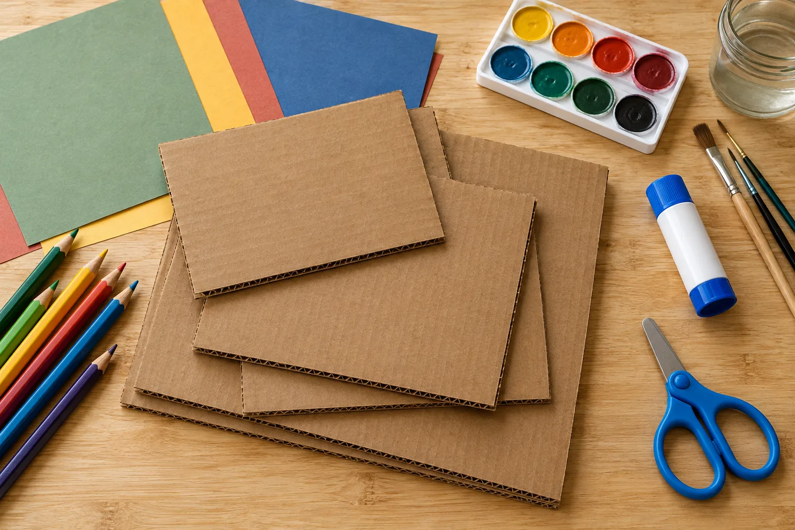

アトリエ・ライラック
加藤奈津実の活動分野として、デコラティブペインティング、フォークアート、ほうろう、家具リメイクが紹介されています。

非公式デザイン見本保存された公式掲載情報をもとにした参考案内です。最新の料金・受付状況・実施条件は公式でご確認ください。
GUIDE 01
加藤奈津実の活動分野として、デコラティブペインティング、フォークアート、ほうろう、家具リメイクが紹介されています。
アクリルやオイルなど、講師紹介にある技法から興味のある内容を探せます。すべての体験で全技法を扱う案内ではありません。講座の内容と必要な用具は公式でご確認ください。
GUIDE 02
浦和校の本科と体験は別の講座として案内されています。日時・料金・持ち物は、公式から案内される会場の講座ページでご確認ください。
体験は7日前までの申込・支払という案内です。時間内に作品が完成しない場合もあります。現在の空席や申込成立を保証するものではありません。
GUIDE 03
参加したい内容や会場については、本人の公式案内からご確認ください。ほかの会場やオンラインの現在の受付状況は、個別に確認が必要です。
OFFICIAL INFORMATION
希望する内容の詳しい条件と日程は、公式ページへ。この見本では申込・予約・決済を受け付けていません。